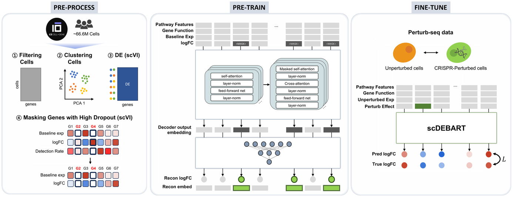

scDEBART: Predicting in silico Single-Cell Perturbation Responses via Large-Scale Differential Expression Learning

A foundation model for single-cell perturbation response, pretrained to predict log fold-changes rather than absolute expression.
- 6.28M DE profiles / 66.6M cells
- 71.4% top-1 reverse perturbation
- Best DEG recovery on 5 datasets
Provisional patent application filed, Republic of Korea — No. 10-2026-0094556.